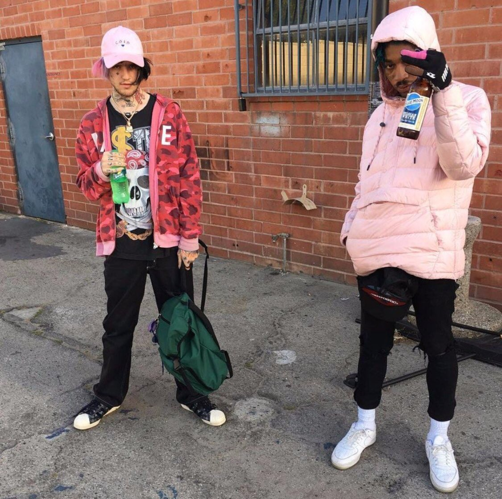

Forever Brothers: Lil Tracy and Lil Peep
In the realm of alternative hip-hop and emo rap, few collaborations and friendships have left as profound an impact as that of Lil Tracy and Lil Peep. Their bond went beyond musical collaborations; it was a genuine friendship that resonated with fans worldwide. In this blog post, we'll delve into the relationship between Lil Tracy and Lil Peep, exploring their shared journey, creative synergy, and the lasting legacy they have left behind.
Lil Tracy and Lil Peep's friendship was built on a shared understanding of their struggles and a love for making music that connected with people on a deeper level. They supported each other during challenging times, both personally and professionally, offering guidance and a listening ear. This foundation of friendship allowed them to create music that was authentic and raw, reflecting their emotions and experiences.
The musical collaboration between Lil Tracy and Lil Peep was a natural extension of their friendship. Their synergy was evident in their joint projects, where their unique styles blended seamlessly, resulting in emotionally charged and introspective tracks. The duo's ability to complement each other's strengths and vulnerabilities allowed their music to resonate with a wide audience, fostering a sense of connection and understanding.
Lil Tracy and Lil Peep's contributions to the emo rap genre cannot be overstated. They were pioneers in blending elements of hip-hop, punk, and emo, creating a sound that spoke to a generation of listeners seeking solace in music. Their lyrics often explored themes of heartbreak, mental health struggles, and drug use, offering a cathartic outlet for their fans. Their impact on the genre continues to inspire and influence a new wave of artists who strive to create emotionally charged music.
Following the tragic passing of Lil Peep in 2017, Lil Tracy has been instrumental in keeping their shared musical legacy alive. He has remained dedicated to honoring their friendship by releasing posthumous collaborations and continuing to perform their joint tracks during live shows. Lil Tracy's commitment to preserving Lil Peep's memory and music serves as a testament to the profound impact they had on each other's lives. Following the tragic passing of Lil Peep in 2017, Lil Tracy has been instrumental in keeping their shared musical legacy alive. He has remained dedicated to honoring their friendship by releasing posthumous collaborations and continuing to perform their joint tracks during live shows. Lil Tracy's commitment to preserving Lil Peep's memory and music serves as a testament to the profound impact they had on each other's lives.
.png)
.png)